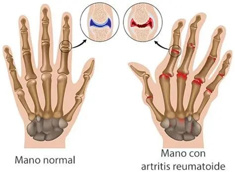
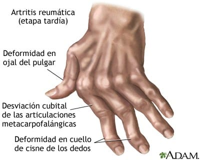

Dispensador de agua caliente accesible
¿Qué estamos haciendo?
Estamos desarrollando un dispensador de agua caliente automatizado e inteligente, diseñado para facilitar la preparación de bebidas de forma segura, rápida y completamente libre de esfuerzo físico pesado.
¿Para quién es?
Este proyecto está enfocado principalmente en personas con artritis reumatoide y movilidad reducida en las manos y muñecas, ayudándoles a recuperar su independencia cotidiana y evitando riesgos de quemaduras o dolores al manipular jarras pesadas.
El impacto de la Artritis Reumatoide en el día a día
Comprender la enfermedad es el primer paso para diseñar soluciones verdaderamente empáticas.

El despertar es el momento más duro. Los pacientes experimentan las manos entumecidas y rígidas, con un dolor punzante en articulaciones que dificulta realizar movimientos básicos durante las primeras horas del día.

Tareas cotidianas como levantar una taza de café o servir agua caliente de una tetera tradicional se convierten en un riesgo físico constante y en una fuente de frustración por la dependencia de terceros.
"Nuestro objetivo no es solo crear un electrodoméstico, sino devolver la confianza, la seguridad y la autonomía a quienes enfrentan este reto diario."